Can Large Language Models be Good Emotional Supporter?
Mitigating Preference Bias on Emotional Support Conversation
Abstract
Emotional Support Conversation (ESC) is a task aimed at alleviating individuals’ emotional distress through daily conversation. Given its inherent complexity and non-intuitive nature, ESConv dataset incorporates support strategies to facilitate the generation of appropriate responses. Recently, despite the remarkable conversational ability of large language models (LLMs), previous studies have suggested that they often struggle with providing useful emotional support. Hence, this work initially analyzes the results of LLMs on ESConv, revealing challenges in selecting the correct strategy and a notable preference for a specific strategy. Motivated by these, we explore the impact of the inherent preference in LLMs on providing emotional support, and consequently, we observe that exhibiting high preference for specific strategies hinders effective emotional support, aggravating its robustness in predicting the appropriate strategy. Moreover, we conduct a methodological study to offer insights into the necessary approaches for LLMs to serve as proficient emotional supporters. Our findings emphasize that (1) low preference for specific strategies hinders the progress of emotional support, (2) external assistance helps reduce preference bias, and (3) LLMs alone cannot become good emotional supporters. These insights suggest promising avenues for future research to enhance the emotional intelligence of LLMs.
Can Large Language Models be Good Emotional Supporter?
Mitigating Preference Bias on Emotional Support Conversation
Dongjin Kang1††thanks: ∗Equal contribution Sunghwan Kim1∗ Taeyoon Kwon1 Seungjun Moon1 Hyunsouk Cho2 Youngjae Yu1 Dongha Lee1 Jinyoung Yeo1 1Yonsei University 2Ajou University {hard1010,kimsh8564,yjy,donalee,jinyeo}@yonsei.ac.kr hyunsouk@ajou.ac.kr
1 Introduction
Emotional support conversation (ESC) aims to alleviate individuals’ emotional intensity and provide guidance for navigating personal challenges through engaging dialogue (Langford et al., 1997; Greene, 2003; Heaney and Israel, 2008). Effective emotional support involves not just providing helpful emotional support but also avoiding poor-quality emotional support, which can exacerbate an already stressful situation and may contribute to numerous psychological, relational, and physical problems (Burleson, 2003). However, providing emotional support is a complex and not intuitive task, often challenging even for humans (Burleson, 2003). Therefore, based on Hill’s Helping Skills Theory (Hill, 2009), Liu et al. (2021) propose a framework for emotional support that generally follows three stages (Exploration Comforting Action), with a total of eight support strategies corresponding to each stage, where support strategies consist of various conversational methods for the generation of the following response, such as reflection of feelings, self-disclosure.
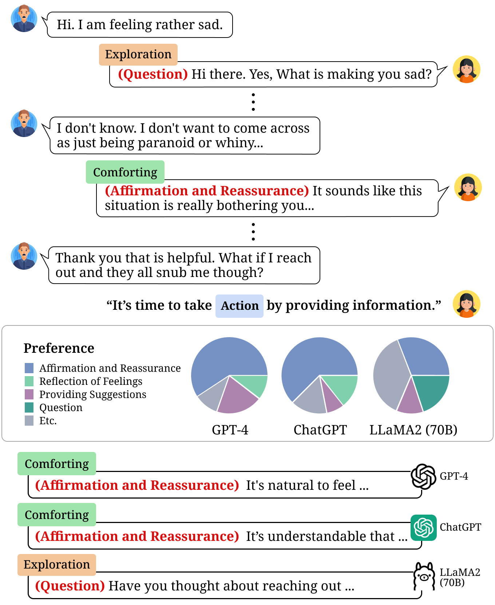
Recently, large language models (LLMs), based on their remarkable conversational ability, have been widely used in various dialogue systems (Ji et al., 2023; Friedman et al., 2023; Lee et al., 2023). In particular, there is a growing interest in leveraging LLMs for providing emotional support (Chen et al., 2023a; Zheng et al., 2023b), as it takes place in daily conversations rather than in professional counseling (Liu et al., 2021). However, LLMs that demonstrate outstanding capabilities often struggle with providing emotional support (Chen et al., 2023b; Farhat, 2023). As ESC task consists of strategy selection and strategy-constrained response generation, selecting the appropriate strategy is crucial for effective emotional support, thereby we anticipate that LLMs may struggle with predicting strategies. As expected, we find that LLMs lack proficiency in predicting the accurate strategy111The detailed results are shown in Appendix A.1. To understand the reasons behind this, we examine the distribution of how often LLMs select each strategy and observe high preference for certain strategies (i.e., preference bias), as shown in Figure 1.
Motivated by these, this work is guided by three research questions:
RQ1: Does the preference affect providing emotional support? (Section 4.2) Initially, we assess the proficiency of various LLMs, specifically identifying the stages where each model excels and struggles. Our findings reveal that strategies with higher preferences exhibit better performance. Consequently, as excessive preference for a specific strategy can negatively affect the performance of other strategies, we emphasize the importance of low preference bias for robustly predicting strategies across all three stages.
RQ2: How to mitigate the preference bias on LLMs? (Section 5.2) To understand how to alleviate the preference bias, we apply two groups of methods to LLMs, based on Contact Hypothesis (Allport et al., 1954), which posits that contact between different groups can reduce their bias. We find that LLMs align with Contact Hypothesis, indicating that reducing preference bias is challenging for LLMs themselves so that external assistance is necessary. As a result, when mitigating preference bias through external assistance, LLMs consistently perform well in predicting strategy across all three stages. This can effectively prevent poor-quality emotional support, which is more crucial than providing appropriate emotional support, given its potential to exacerbate an already stressful situation.
RQ3: Does improving preference bias indeed help to become a better emotional supporter? (Section 5.3) To precisely evaluate whether responses provide helpful emotional support, we build a comprehensive set of criteria formulated in collaboration with psychologists. Within these criteria, we analyze whether enhancements in preference bias translate into actual improvements in the quality of emotional support, considering both the advantages of low preference bias and the drawbacks of high preference bias. In human evaluations based on the criteria, lower preference bias is associated with higher scores, while higher preference bias leads to an increased number of poor-quality responses.
To summarize, our contributions are as follows:
-
•
We introduce that a wide range of LLMs exhibits different preference for strategies.
-
•
We propose a new suite of metrics that focus on strategies: proficiency, preference, and preference bias.
-
•
We emphasize the crucial role of preference bias in robustly providing effective emotional support across the stages.
-
•
We showcase that LLMs align with Contact Hypothesis, which indicates that external assistance can help address preference bias.
-
•
We construct a comprehensive set of criteria to precisely evaluate whether responses provide helpful emotional support.
-
•
Through extensive human evaluation, we demonstrate that mitigating preference bias is crucial for decreasing the proportion of poor-quality responses and, consequently, for effective emotional support.
2 Preliminaries & Related Work
2.1 Emotional Support Conversation
Liu et al. (2021) propose the task of emotional support conversation and release the dataset ESConv, covering a wide range of situations. The ESC centers on the interaction between a user experiencing emotional distress (help-seeker) and a system designed to provide comfort (supporter), aiming to alleviate the user’s emotional intensity. As ESC primarily focuses on providing emotional support, it differs from professional counseling, which instead emphasizes support within a social context, such as interactions with friends or family.
The procedure of emotional support in ESConv generally follows three stages (Exploration Comforting Action). While it does not necessarily follow this sequence of stages, providing emotional support often requires progressing through multiple stages. Therefore, it is crucial to be able to provide appropriate responses in all stages, as poor performance in a particular stage could hinder the progress of the conversation. Further details about ESConv are in Appendix B.
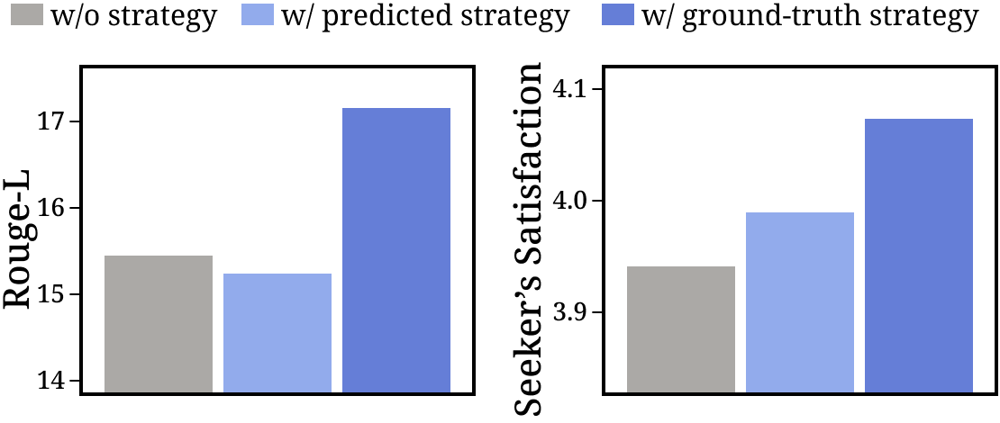
2.2 Incorporating Strategies into ESC Systems
Prior researches on building ESC systems primarily emphasize the integration of support strategies, in conjunction with elements such as emotion, semantics (Zhao et al., 2023b), and persona (Cheng et al., 2023). Some latent studies focus on modeling the user’s state along with the strategies (Cheng et al., 2022; Jia et al., 2023). Notably, Deng et al. (2023) incorporate generative commonsense knowledge model (Hwang et al., 2020) with strategy prediction as an auxiliary task to provide better emotional support. However, many of these approaches involve modifications to the model’s architecture or tuning the pre-trained parameters, a process not typically feasible with LLMs.
2.3 Emotional Support from LLMs
With the emergence of LLMs, there has been an increased amounts of research exploring LLMs as emotional supporters. Recent studies have attempted to replace the fine-tuning approach by prompting LLMs via in-context learning to leverage LLMs as ESC systems (Chen et al., 2023a; Zheng et al., 2023b). Despite their potential, recent studies have demonstrated limitations in LLMs’ ability to provide emotional support (Chung et al., 2023; Farhat, 2023; Eshghie and Eshghie, 2023; Song et al., 2024). Specifically, Song et al. (2024) find that users may experience discomfort or concern due to the lack of responsibility in LLMs’ recommendations for emotional support response. However, even though the majority of ESC research has focused on leveraging support strategies in their methods, a comprehensive analysis focused on strategy in LLMs has been under-explored.
3 Evaluation Setup
3.1 Task and Focus
Task: emotional support response generation.
The effectiveness of machine-generated responses in providing emotional support is highly dependent on selecting an appropriate strategy. We formulate the emotional support response generation task as generating a response over a support strategy. Formally, given the dialogue background , a pre-chat survey from the seeker (e.g., emotion, situation), and the dialogue context , the model first predicts the strategy , and then generates the response based on , , and :
| (1) | |||
| (2) |
Focus: strategy-centric analysis.
Among the various reasons why LLMs struggle with providing emotional support, this work focuses on strategy, which is the key factor within the ESC systems. To emphasize the validity of strategy-centric analysis, we explore the potential of response quality when generated upon the ground-truth strategy. As a result, in Figure 2, if the model can predict strategies correctly, there is significant room for improvement in the quality of emotional support response.
| Exploration | Comforting | Action | ||
|---|---|---|---|---|
| Strategy | Total () | |||
| Que. | 24.8 | 10.0 | 7.0 | 12.8 |
| Res. | 16.8 | 9.6 | 4.5 | 9.4 |
| Ref. | 16.8 | 18.3 | 6.3 | 12.7 |
| Sel. | 16.8 | 20.1 | 15.4 | 17.2 |
| Aff. | 7.6 | 24.1 | 21.1 | 18.2 |
| Pro. | 8.4 | 8.5 | 24.4 | 15.3 |
| Inf. | 6.5 | 6.5 | 18.5 | 11.7 |
| Oth. | 2.3 | 2.5 | 2.8 | 2.6 |
3.2 Evaluation Set
For comprehensive analysis, we construct three test sets based on stages from ESConv, as demonstrated in Table 1. Firstly, we randomly truncate the dialogues into 5-15 turns samples. We then annotate each sample with a stage and classify the samples according to their stage. Additionally, we minimize the proportion of the strategy Others to reduce responses less relevant to emotional support. Finally, we remove some samples to ensure no overlap in each test set, and a more detailed explanation of data construction is in Appendix C.1.
3.3 Metrics
Proficiency.
We define proficiency as how well the model selects the correct strategy. The proficiency for strategy () is quantified as the F1 score for strategy . To precisely analyze the model’s proficiency, we utilize two types of F1 scores, both of which stem from the proficiency of each strategy: (1) the macro F1 score , and (2) the weighted F1 score. The macro F1 score () represents the overall proficiency of the model across the strategies, which is evaluated over the entire test sets (). In contrast, we employ the weighted F1 score to assess the model on a test set () consisting only of data corresponding to a specific stage.
Preference.
We define preference as how much the model prefers certain strategies over others. To quantify the preference for each strategy in LLMs, we employ the Bradley-Terry model (Bradley and Terry, 1952), which is widely used in human preference modeling (Rafailov et al., 2023). Following Newman (2023), we formally derive the preference for strategy as follows:
| (3) |
where represents the number of times the model predicts strategy when the ground-truth strategy is . The preference is updated through iteration of the Eq (3)222The details are demonstrated in Appendix C.2., where represents the preference in the next iteration. After the final iteration, we scale the total sum of to 8 () and the average becomes 1, indicating a strong preference for strategy if .
Preference Bias.
We also define a standard deviation of preferences across the strategies as preference bias .
| (4) |
where a higher value for indicates that the model exhibits a clear preference for both preferred and non-preferred strategies.
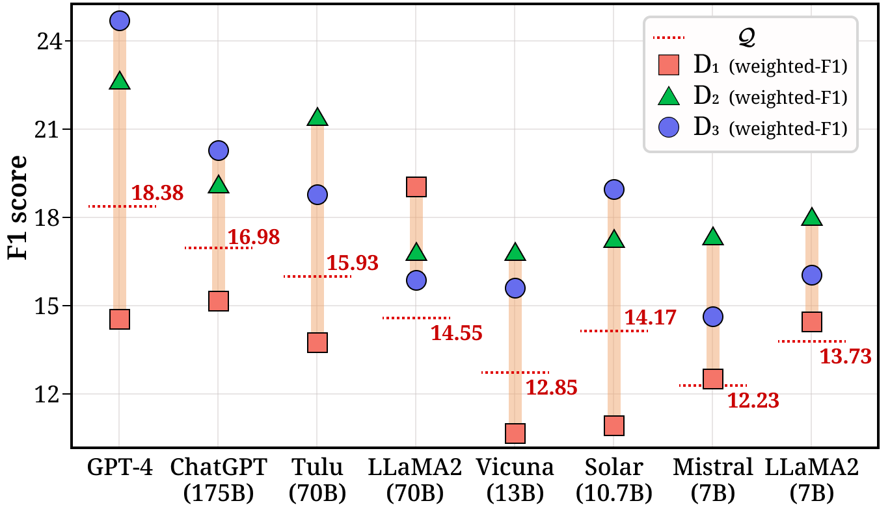
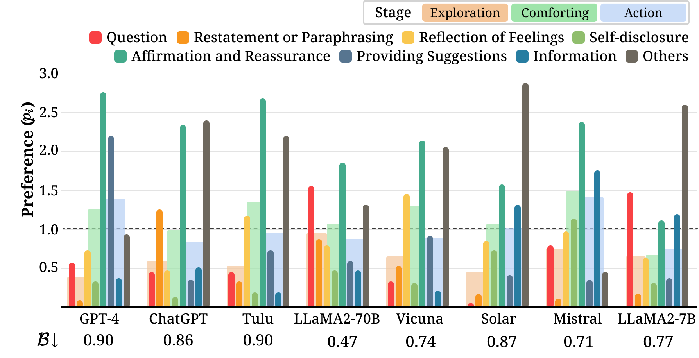
4 Proficiency and Preference of LLMs on Strategy
4.1 Models & Implementation Details
According to the public release, we categorize LLMs into the following two groups: (1) Closed-source models which are available via APIs, such as ChatGPT and GPT4 (OpenAI, 2023b); (2) Open-source models accessible through parameters, including LLaMA2-7B/70B (Touvron et al., 2023), Tulu-70B (Ivison et al., 2023), Vicuna-13B (Zheng et al., 2023a), Solar-10.7B (Kim et al., 2023) and Mistral-7B (Jiang et al., 2023).
In the prompt, we include strategy descriptions to enhance the understanding of each strategy and randomly selected 2-shot examples due to challenges in adhering to the desired output format with open-source models. To facilitate comparison, we also provide 2-shot examples of the closed-source model. More details about models are in Appendix C.3 and about the prompt are in Appendix C.4.
4.2 RQ1: Does the preference affect providing emotional support?
Proficiency of LLMs.
Figure 3(a) illustrates the proficiency of each LLM (red line). Not surprisingly, GPT-4 records the highest score in proficiency , indicating that it has the overall highest ability to align with strategies, and smaller models tend to achieve lower scores. However, even among models of similar sizes, LLMs exhibit different performances, with smaller models like Solar and LLaMA2-7B showing relatively good proficiency.
The performance varies depending on the test set.
Figure 3(a) also exhibits the performance of LLMs on each test set, with distinct shapes representing different test sets . Most LLMs achieve high scores on or , while scoring mostly lower on . This indicates that LLMs exhibit relatively better performance in comforting or action but struggle with exploration stage, suggesting that they may provide poor-quality emotional support in specific situations, especially during the exploration stage. Generally, emotional support progresses through the exploration to comforting and action stage, thereby providing poor-quality response in the exploration stage () may hinder the transition to the next stage, making it difficult to offer effective emotional support. As a result, a high score in proficiency does not necessarily guarantee providing helpful emotional support.
Preference bias affects robustness.
Figure 3(b) illustrates that each LLM exhibits different preferences for strategies () and the average preference of strategies belonging to each stage, along with preference bias (). We observe a strong average preference in stages that exhibit higher performance in Figure 3(a). Especially, GPT-4 exhibits low preferences for the exploration stage, which aligns with the lower performance on . In contrast, LLaMA2-70B demonstrates relatively uniform preferences for strategies, leading to robust performance across . Through these observations, we can conclude that despite a high proficiency , significant preference bias can result in lower performance depending on the stages, hindering robustness in predicting strategy, which means consistent performance across all three stages.
5 Methodological Study: Mitigating Preference Bias
According to findings from the previous section, our focus shifts to offering insights into effective approaches for LLMs to reduce their preference bias. We utilize two models, ChatGPT and LLaMA2-70B, each serving as a representative of closed-source and open-source LLM respectively.
5.1 Methods
Based on the Contact Hypothesis, which suggests that bias between two groups can be reduced through intergroup contact, we hypothesize that external assistance on LLMs might help alleviate preference bias. Therefore, we categorize available methods for LLMs into two groups: (1) self-contact and (2) external-contact.
Self-contact approaches.
We define self-contact as methods that rely solely on LLMs’ abilities without external interaction. We utilize three self-contact methods: (1) Direct-Refine, refining the initially generated response by the model itself; (2) Self-Refine, refining the initially generated response through self-feedback; (3) Emotional-CoT, which generates user states as a reasoning path for response generation, following Wei et al. (2022).
External-contact approaches.
External-contact involves methods where LLMs not only utilize their internal knowledge but also receive assistance from external knowledge. Similar to KEMI (Deng et al., 2023), one of the state-of-the-art model in ESC task, we leverage commonsense knowledge, COMET. Furthermore, we fine-tune LLaMA2-7B as a strategy planner, a model for planning the next strategy the supporter should take based on the dialogue context. LLMs then respond based on the strategy generated by the strategy planner. Finally, we expand the number of examples () in the prompt by selecting them randomly (). Details about the methods are in Appendix C.5.
5.2 RQ2: How to mitigate the preference bias on LLMs?
| Methods | B-2 | R-L | |||
|---|---|---|---|---|---|
| ChatGPT (0-shot) | 13.50 | 1.38 | 6.27 | 14.86 | |
| Self | + Direct-Refine | 13.40 | 1.60 | 5.68 | 14.50 |
| + Self-Refine | 12.37 | 1.53 | 5.16 | 14.33 | |
| + Emotional-CoT | 9.55 | 1.56 | 5.23 | 14.12 | |
| External | + w/ COMET | 12.78 | 0.95 | 6.71 | 15.07 |
| + w/ Example Expansion | 16.91 | 0.82 | 7.45 | 15.22 | |
| + w/ Strategy Planner | 21.09 | 0.36 | 6.96 | 14.91 | |
| LLaMA2-70B (2-shot) | 14.55 | 0.47 | 6.15 | 14.29 | |
| Self | + Direct-Refine | 13.17 | 0.59 | 5.59 | 13.98 |
| + Self-Refine | 13.15 | 0.55 | 5.56 | 13.70 | |
| + Emotional-CoT | 12.73 | 0.53 | 6.37 | 13.87 | |
| External | + w/ COMET | 14.53 | 0.51 | 6.21 | 14.55 |
| + w/ Example Expansion | 15.14 | 0.44 | 6.56 | 14.66 | |
| + w/ Strategy Planner | 21.09 | 0.36 | 6.44 | 14.49 |
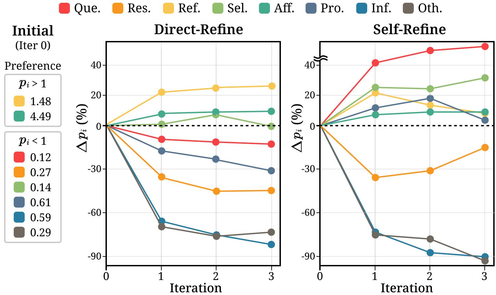
Methods with negative effects.
Table 2 reports changes in proficiency and preference bias across the various methods. Several methods exhibit negative effects on LLMs’ proficiency and preference bias. Specifically, the results of self-contact methods present a noticeable pattern in which proficiency declines and preference bias becomes more pronounced. This pattern implies that, similar to humans, when LLMs have bias, thinking alone can deepen those bias, indicating that self-contact methods do not contribute to enhancing their capabilities to become better emotional supporters. Moreover, the degradation of automated metrics (B-2, R-L) on self-contact stems from lower proficiency and increased preference bias, which leads to poor performance, especially in stages that are less proficient. To further investigate the negative impact of self-contact, we measure the results of Direct-Refine and Self-Refine under an iterative refinement setting to further analyze the preference of each strategy (). In Figure 4, we observe a trend where, as the iterations continue, there is a growing preference for strategy that is initially preferred (i.e., ). In contrast, the preference for strategies that are initially dispreferred (i.e., ) tends to diminish over successive iterations. As this trend continues, LLMs may struggle more in stages that include strategies with lower preference, and during these stages, they gradually provide poor-quality emotional support.
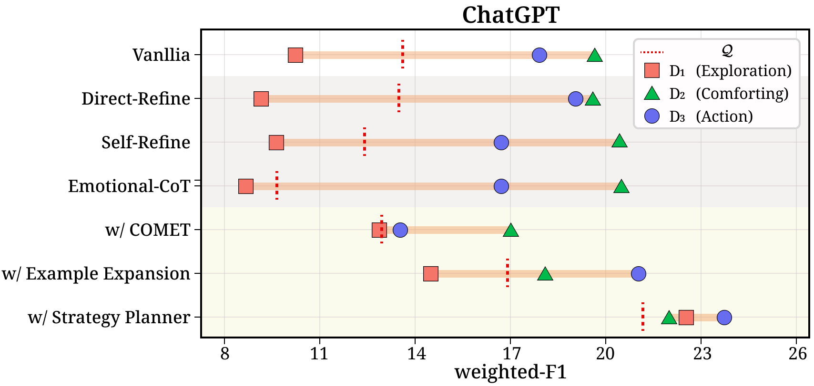
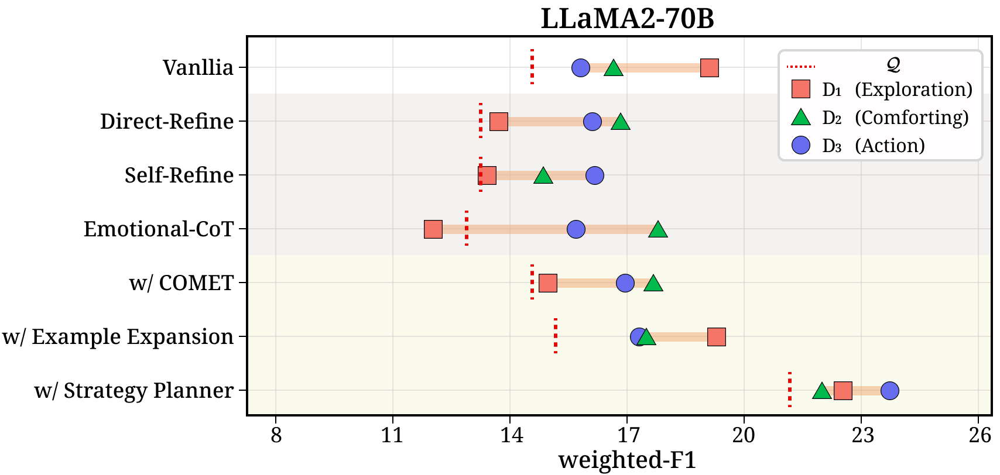
LLMs align with contact hypothesis.
As shown in Table 2, the application of external-contact methods mostly results in a reduction of preference bias on both closed- and open-source LLMs. Particularly, receiving assistance from a fine-tuned strategy planner (w/ Strategy Planner) or having more examples (w/ Example Expansion) seems to be more helpful than relying on commonsense knowledge. These external-contact methods commonly enable LLMs to receive knowledge they cannot generate independently. Utilizing the strategy planner or expanding more examples offers direct knowledge related to strategy, whereas incorporating commonsense knowledge transfers it indirectly. In summary, external assistance, particularly when directly informing about strategies, plays a crucial role in enhancing both proficiency and preference bias in LLMs. Further analysis on the impact of external-contact is provided in Appendix G.2.
Methodological impacts on providing emotional support.
Figure 5 illustrates the results for each test set when applying self-contact (gray background) and external-contact (yellow background) to both ChatGPT and LLaMA2-70B. As observed earlier, applying self-contact, which reduces proficiency and intensifies preference bias, leads to an increased gap between . This substantial gap between indicates a decrease in robustness across various stages of emotional support, and in less proficient stages, they may provide poor-quality responses, which might worsen the seeker’s situation and intensify distress. In particular, all self-contact approaches significantly reduce performance on the exploration stage (), which can create challenges in progressing to subsequent stages, ultimately hindering the achievement of the goals in emotional support. On the other hand, external-contact reduces the overall gap between different , particularly exhibiting significant improvement on ChatGPT. This reduction contributes to robust performance in selecting strategy across the stages, which is crucial for effective emotional support.
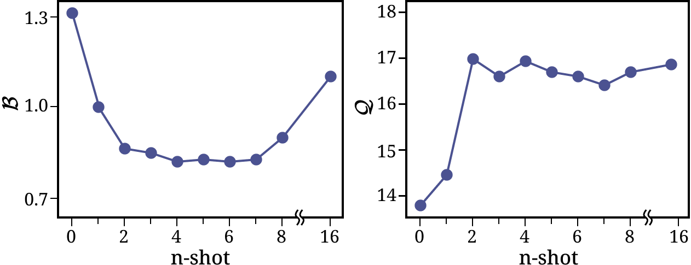
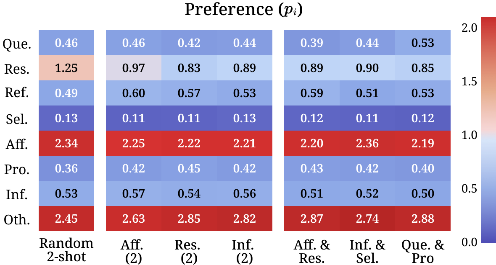
Effect of examples in the prompt.
To assess the efficacy of examples in the prompt, we initially investigate a trend associated with the number of examples (). Figure 6(a) demonstrates that proficiency and preference bias improve when using randomly selected examples. However, while proficiency converges as increases, preference bias worsens significantly with larger values of (), indicating that too many examples may be detrimental. Additionally, to understand the impact of different types of strategies employed in the examples, we include the various combinations of strategies within 2-shot examples. Intriguingly, Figure 6(b) reveals consistent results across the diverse combinations. In summary, providing the appropriate number of examples may enhance preference bias, whereas the type of strategies within each example does not matter. Further analysis of each preference based on is in Appendix F.3.
| Base Models | weighted-F1 | ||||
|---|---|---|---|---|---|
| BERT | 18.02 | 0.50 | 18.17 | 22.68 | 19.25 |
| RoBERTa | 21.01 | 0.60 | 21.34 | 24.18 | 22.99 |
| Mistral | 21.89 | 0.45 | 22.61 | 23.57 | 24.59 |
| LLaMA2-7B | 21.10 | 0.36 | 22.59 | 21.85 | 23.77 |
Various models as a strategy planner.
In our previous experiments, a trained LLaMA2-7B serves as a strategy planner, yielding improved outcomes. To explore the potential of various models as a strategy planner, we ablate with several language models, including Mistral and encoder-based models such as BERT (Devlin et al., 2019) and RoBERTa (Liu et al., 2019). As shown in Table 3, we find that using LLMs as the backbone model for the strategy planner leads to notable enhancements in proficiency and preference bias. Moreover, while encoder-based models achieve performance comparable to LLMs, they exhibit relatively higher preference bias, indicating weaker robustness and potentially providing poor-quality emotional support. We also leave the exploration of training a strategy planner with more diverse and systematic methods for future work, and a more ablation study on supervised fine-tuning is provided in Appendix F.4.
5.3 RQ3: Does improving preference bias help to become a better emotional supporter?
Criteria of human evaluation.
To precisely assess whether responses provide helpful emotional support, we build a comprehensive set of criteria formulated in collaboration with psychologists in terms of emotional support, based on the perspective of seeker’s satisfaction (Sat.). As emotional support aims to appropriately assess the user’s state and reduce emotional intensity, we fine-grain this perspective and finally construct three smaller criteria to enable a more elaborate assessment: (1) Acceptance: Does the seeker accept without discomfort; (2) Effectiveness: Is it helpful in shifting negative emotions or attitudes towards a positive direction; (3) Sensitivity: Does it take into consideration the general state of the seeker. Furthermore, to clarify the capability of LLMs to align strategy and responses, we include Alignment.
We randomly sample 100 dialogues from three test sets (), ensuring diversity (e.g., strategy), and three annotators are required to determine the Win/Tie/Lose for each comparison in Table 4. Additionally, we ask three annotators to evaluate each sample on a 1-5 Likert scale, providing specific rubrics for each score to ensure detailed assessments on the quality of responses (Table 5). We include more details on the human evaluation, including the results of Alignment, in Appendix E.
| ChatGPT | Acc. | Eff. | Sen. | Sat. |
|---|---|---|---|---|
| Vanilla | 27.9 | 23.5 | 22.1 | 24.5 |
| Tie | 20.6 | 32.4 | 22.1 | 25.0 |
| + Self-Refine | ||||
| Vanilla | 22.9 | 24.0 | 14.6 | 20.5 |
| Tie | 21.9 | 33.3 | 27.1 | 27.4 |
| + w/ COMET | ||||
| Vanilla | 13.1 | 25.3 | 16.2 | 18.2 |
| Tie | 26.3 | 26.3 | 21.2 | 24.6 |
| + w/ Example Expansion | ||||
| Vanilla | 16.7 | 29.2 | 29.2 | 25.0 |
| Tie | 12.5 | 16.7 | 12.5 | 13.9 |
| + w/ Strategy Planner |
| Methods | < 3 (fail) | 3 (acceptable) |
|---|---|---|
| ChatGPT | 16.7 | 83.3 |
| + Direct-Refine | 21.2 | 78.8 |
| + Self-Refine | 17.4 | 82.6 |
| + w/ Strategy planner | 8.0 | 92.0 |
| + Oracle Strategy | 3.8 | 96.2 |
Benefits of mitigating preference bias.
Table 4 presents the results of comparative human evaluation between various methods on ChatGPT and the vanilla ChatGPT. Consistent with our previous findings, external-contact outperforms self-contact (i.e., Self-Refine) in terms of overall seeker’s satisfaction (Sat.). Concretely, when comparing the w/ COMET with Self-Refine, which have similar proficiency but significant differences in preference bias, the overall seeker’s satisfaction score is higher for w/ COMET with lower preference bias. Furthermore, among the external-contact methods, responses generated through the strategy planner, which exhibits the most significant improvements in preference bias, are the most helpful in reducing the seeker’s emotional intensity. Consequently, we can confirm that it is crucial to mitigate preference bias to enhance robustness in predicting strategy, thereby providing effective emotional support.
Drawbacks of aggravating preference bias.
To understand the negative impact of severe preference bias, we investigate the proportion of responses that could worsen the seeker’s situation or distress (i.e., rated below 3). Table 5 demonstrates that the proportion of poor-quality emotional support significantly increases in self-contact (i.e., Direct-Refine, Self-Refine), which exacerbates preference bias. This confirms that the aggravation in preference bias sharpens the contrast between proficient and less proficient stages, leading to providing more poor-quality responses in the less proficient stages. Additionally, the decrease in the proportion of poor-quality responses in external-contact (i.e., w/ Strategy Planner), where preference bias diminishes, supports this conclusion. As a result, high preference bias disturbs robustness, leading to an increased number of poor-quality responses. This demonstrates that low preference bias reduces the number of poor-quality responses and, consequently, is crucial for effective emotional support.
6 Discussion and Conclusions
This work conducts a strategy-centric analysis to delve into why LLMs struggle with providing emotional support, relying on the importance of strategy in emotional support. Our results show that as LLMs exhibit preference bias towards certain strategies, they lack robustness in predicting strategy across the three stages of emotional support, where struggling in a particular stage may hinder the progress to the next stage. We empirically demonstrate that LLMs are aligned with the psychological Contact Hypothesis just like humans, indicating that external assistance can mitigate the preference bias in LLMs, which they can not do themselves. We highlight that mitigating the preference bias strengthens robustness in selecting appropriate strategies across the stages, leading to overall improvement in the quality of emotional support and a significant reduction in the number of poor-quality responses. We hope that this work will become a promising step for future work to enhance the emotional intelligence of LLMs.
Limitations
This work has the following limitations: (1) As aforementioned in Section 3.2, Cheng et al. (2022) demonstrate that the strategy Others are not helpful in enhancing the response generation and may not be fully fine-grained. This can potentially prevent obtaining sufficient insights by obscuring more detailed preferences of the model; (2) We include 2-shot examples for open-source LLMs as they often struggle to adhere to the desired output format (e.g., wrong strategy that is not among the eight provided). Since we demonstrated improvement when prompting with n-shot examples in Section 5.2, the actual proficiency and preference bias of open-source LLMs may be worse than the scores we published; (3) Understanding the reasons for preference bias is challenging not only for closed-source LLMs but also for open-source LLMs, as it is difficult to precisely grasp the relationships between strategy, training data, methods and model architecture; (4) We have observed that even when using an oracle strategy in LLMs (Table 8), responses that increase emotional intensity still exist (3.8%). This indicates a lack of ability to generate appropriate responses for emotional support, even when the strategy is perfectly selected; (5) While we confirm that LLMs generally generate well-aligned responses with the strategy (Figure 16), it is evident that there are some cases where they are not aligned, thereby future work should recognize this misalignment. Therefore, future work might consider both correctly predicting the strategy and generating helpful responses based on the predicted strategy.
Ethical Considerations
The ESConv a dataset used in this work is a publicly available and well-constructed benchmark for emotional support conversation, which is collected by employed crowd-sourced workers, with the sensitive and private information filtered during the dataset construction. All participants in our human evaluation are volunteered, transparently informed of our research intent, and paid reasonable wages.
Moreover, it is worth mentioning that the term "emotional support" in this paper mainly refers to support within a social context, such as interactions with friends or family in daily conversation, rather than professional counseling or diagnosis. However, as LLMs can generate sensual, harmful, biased, offensive, or violent content, using them as emotional support systems requires particular caution to avoid such content from appearing to users. And it also requires considerable further efforts to construct a safer system, which is capable of detecting users who have tendencies of self-harming or suicide.
References
- Allport et al. (1954) Thomas Allport, Pettigrew, Kerstin Hammann, and S Salzborn. 1954. Gordon willard allport: The nature of prejudice. Samuel Salzborn (Hg.): Klassiker der Sozialwissenschaften, 100:193–197.
- Banerjee and Lavie (2005) Satanjeev Banerjee and Alon Lavie. 2005. Meteor: An automatic metric for mt evaluation with improved correlation with human judgments. In IEEvaluation@ACL.
- Bradley and Terry (1952) Ralph Allan Bradley and Milton E Terry. 1952. Rank analysis of incomplete block designs: I. the method of paired comparisons. Biometrika, 39(3/4):324–345.
- Burleson (2003) Brant R Burleson. 2003. Emotional support skill. In Handbook of Communication and Social Interaction Skills, page 551. Psychology Press.
- Chae et al. (2023) Hyungjoo Chae, Yongho Song, Kai Tzu-iunn Ong, Taeyoon Kwon, Minjin Kim, Youngjae Yu, Dongha Lee, Dongyeop Kang, and Jinyoung Yeo. 2023. Dialogue chain-of-thought distillation for commonsense-aware conversational agents. arXiv preprint arXiv:2310.09343.
- Chen et al. (2023a) Maximillian Chen, Xiao Yu, Weiyan Shi, Urvi Awasthi, and Zhou Yu. 2023a. Controllable mixed-initiative dialogue generation through prompting. In Annual Meeting of the Association for Computational Linguistics.
- Chen et al. (2023b) Yirong Chen, Xiaofen Xing, Jingkai Lin, Huimin Zheng, Zhenyu Wang, Qi Liu, and Xiangmin Xu. 2023b. Soulchat: Improving llms’ empathy, listening, and comfort abilities through fine-tuning with multi-turn empathy conversations.
- Cheng et al. (2023) Jiale Cheng, Sahand Sabour, Hao Sun, Zhuang Chen, and Minlie Huang. 2023. Pal: Persona-augmented emotional support conversation generation. In ACL.
- Cheng et al. (2022) Yi Cheng, Wenge Liu, Wenjie Li, Jiashuo Wang, Ruihui Zhao, Bang Liu, Xiaodan Liang, and Yefeng Zheng. 2022. Improving multi-turn emotional support dialogue generation with lookahead strategy planning. In Conference on Empirical Methods in Natural Language Processing.
- Chung et al. (2023) Neo Christopher Chung, George Dyer, and Lennart Brocki. 2023. Challenges of large language models for mental health counseling. arXiv preprint arXiv:2311.13857.
- Deng et al. (2023) Yang Deng, Wenxuan Zhang, Yifei Yuan, and Wai Lam. 2023. Knowledge-enhanced mixed-initiative dialogue system for emotional support conversations. In ACL.
- Dettmers et al. (2023) Tim Dettmers, Artidoro Pagnoni, Ari Holtzman, and Luke Zettlemoyer. 2023. Qlora: Efficient finetuning of quantized llms. arXiv preprint arXiv:2305.14314.
- Devlin et al. (2019) Jacob Devlin, Ming-Wei Chang, Kenton Lee, and Kristina Toutanova. 2019. Bert: Pre-training of deep bidirectional transformers for language understanding. In NAACL-HLT.
- Eshghie and Eshghie (2023) Mahshid Eshghie and Mojtaba Eshghie. 2023. Chatgpt as a therapist assistant: A suitability study. arXiv preprint arXiv:2304.09873.
- Farhat (2023) Faiza Farhat. 2023. Chatgpt as a complementary mental health resource: a boon or a bane. Annals of Biomedical Engineering, pages 1–4.
- Friedman et al. (2023) Luke Friedman, Sameer Ahuja, David Allen, Zhenning Tan, Hakim Sidahmed, Changbo Long, Jun Xie, Gabriel Schubiner, Ajay Patel, Harsh Lara, Brian Chu, Zexi Chen, and Manoj Tiwari. 2023. Leveraging large language models in conversational recommender systems.
- Gao et al. (2022a) Jun Gao, Wei Bi, Ruifeng Xu, and Shuming Shi. 2022a. Ream: An enhancement approach to reference-based evaluation metrics for open-domain dialog generation.
- Gao et al. (2022b) Silin Gao, Jena D. Hwang, Saya Kanno, Hiromi Wakaki, Yuki Mitsufuji, and Antoine Bosselut. 2022b. ComFact: A benchmark for linking contextual commonsense knowledge. In Findings of the Association for Computational Linguistics: EMNLP 2022, pages 1656–1675, Abu Dhabi, United Arab Emirates. Association for Computational Linguistics.
- Greene (2003) Jennifer C Greene. 2003. Handbook of Communication and Social Interaction Skills. Psychology Press.
- Heaney and Israel (2008) Catherine A Heaney and Barbara A Israel. 2008. Social networks and social support. 4:189–210.
- Hill (2009) Clara E Hill. 2009. Helping Skills: Facilitating, Exploration, Insight, and Action. American Psychological Association.
- Hwang et al. (2020) Jena D. Hwang, Chandra Bhagavatula, Ronan Le Bras, Jeff Da, Keisuke Sakaguchi, Antoine Bosselut, and Yejin Choi. 2020. Comet-atomic 2020: On symbolic and neural commonsense knowledge graphs. In AAAI Conference on Artificial Intelligence.
- Ivison et al. (2023) Hamish Ivison, Yizhong Wang, Valentina Pyatkin, Nathan Lambert, Matthew Peters, Pradeep Dasigi, Joel Jang, David Wadden, Noah A. Smith, Iz Beltagy, and Hannaneh Hajishirzi. 2023. Camels in a changing climate: Enhancing lm adaptation with tulu 2.
- Ji et al. (2023) Shaoxiong Ji, Tianlin Zhang, Kailai Yang, Sophia Ananiadou, and Erik Cambria. 2023. Rethinking large language models in mental health applications.
- Jia et al. (2023) Mengzhao Jia, Qianglong Chen, Liqiang Jing, Dawei Fu, and Renyu Li. 2023. Knowledge-enhanced memory model for emotional support conversation. arXiv preprint arXiv:2310.07700.
- Jiang et al. (2023) Albert Q. Jiang, Alexandre Sablayrolles, Arthur Mensch, Chris Bamford, Devendra Singh Chaplot, Diego de las Casas, Florian Bressand, Gianna Lengyel, Guillaume Lample, Lucile Saulnier, Lélio Renard Lavaud, Marie-Anne Lachaux, Pierre Stock, Teven Le Scao, Thibaut Lavril, Thomas Wang, Timothée Lacroix, and William El Sayed. 2023. Mistral 7b.
- Kim et al. (2023) Dahyun Kim, Chanjun Park, Sanghoon Kim, Wonsung Lee, Wonho Song, Yunsu Kim, Hyeonwoo Kim, Yungi Kim, Hyeonju Lee, Jihoo Kim, Changbae Ahn, Seonghoon Yang, Sukyung Lee, Hyunbyung Park, Gyoungjin Gim, Mikyoung Cha, Hwalsuk Lee, and Sunghun Kim. 2023. Solar 10.7b: Scaling large language models with simple yet effective depth up-scaling.
- Langford et al. (1997) Catherine Penny Hinson Langford, Juanita Bowsher, Joseph P Maloney, and Patricia P Lillis. 1997. Social support: A conceptual analysis. Journal of Advanced Nursing, 25(1):95–100.
- Lee et al. (2023) Gibbeum Lee, Volker Hartmann, Jongho Park, Dimitris Papailiopoulos, and Kangwook Lee. 2023. Prompted LLMs as chatbot modules for long open-domain conversation. In Findings of the Association for Computational Linguistics: ACL 2023, pages 4536–4554, Toronto, Canada. Association for Computational Linguistics.
- Li et al. (2016) Jiwei Li, Michel Galley, Chris Brockett, Jianfeng Gao, and William B. Dolan. 2016. A diversity-promoting objective function for neural conversation models. In NAACL.
- Lin (2004) Chin-Yew Lin. 2004. Rouge: A package for automatic evaluation of summaries. In Annual Meeting of the Association for Computational Linguistics.
- Liu et al. (2021) Siyang Liu, Chujie Zheng, Orianna Demasi, Sahand Sabour, Yu Li, Zhou Yu, Yong Jiang, and Minlie Huang. 2021. Towards emotional support dialog systems. In ACL.
- Liu et al. (2019) Yinhan Liu, Myle Ott, Naman Goyal, Jingfei Du, Mandar Joshi, Danqi Chen, Omer Levy, Mike Lewis, Luke Zettlemoyer, and Veselin Stoyanov. 2019. Roberta: A robustly optimized bert pretraining approach.
- Madaan et al. (2023) Aman Madaan, Niket Tandon, Prakhar Gupta, Skyler Hallinan, Luyu Gao, Sarah Wiegreffe, Uri Alon, Nouha Dziri, Shrimai Prabhumoye, Yiming Yang, Sean Welleck, Bodhisattwa Prasad Majumder, Shashank Gupta, Amir Yazdanbakhsh, and Peter Clark. 2023. Self-refine: Iterative refinement with self-feedback. ArXiv, abs/2303.17651.
- Mehri and Eskenazi (2020) Shikib Mehri and Maxine Eskenazi. 2020. Usr: An unsupervised and reference free evaluation metric for dialog generation.
- Newman (2023) M. E. J. Newman. 2023. Efficient computation of rankings from pairwise comparisons. Journal of Machine Learning Research, 24(238):1–25.
- OpenAI (2023a) OpenAI. 2023a. Chatgpt. https://openai.com/blog/chatgpt.
- OpenAI (2023b) OpenAI. 2023b. Gpt-4 technical report.
- Papineni et al. (2002) Kishore Papineni, Salim Roukos, Todd Ward, and Wei-Jing Zhu. 2002. Bleu: a method for automatic evaluation of machine translation. In Annual Meeting of the Association for Computational Linguistics.
- Rafailov et al. (2023) Rafael Rafailov, Archit Sharma, Eric Mitchell, Stefano Ermon, Christopher D. Manning, and Chelsea Finn. 2023. Direct preference optimization: Your language model is secretly a reward model.
- Song et al. (2024) Inhwa Song, Sachin R. Pendse, Neha Kumar, and Munmun De Choudhury. 2024. The typing cure: Experiences with large language model chatbots for mental health support.
- Touvron et al. (2023) Hugo Touvron, Louis Martin, Kevin R. Stone, Peter Albert, Amjad Almahairi, Yasmine Babaei, Nikolay Bashlykov, Soumya Batra, Prajjwal Bhargava, Shruti Bhosale, Daniel M. Bikel, Lukas Blecher, Cristian Cantón Ferrer, Moya Chen, Guillem Cucurull, David Esiobu, Jude Fernandes, Jeremy Fu, Wenyin Fu, Brian Fuller, Cynthia Gao, Vedanuj Goswami, Naman Goyal, Anthony S. Hartshorn, Saghar Hosseini, Rui Hou, Hakan Inan, Marcin Kardas, Viktor Kerkez, Madian Khabsa, Isabel M. Kloumann, A. V. Korenev, Punit Singh Koura, Marie-Anne Lachaux, Thibaut Lavril, Jenya Lee, Diana Liskovich, Yinghai Lu, Yuning Mao, Xavier Martinet, Todor Mihaylov, Pushkar Mishra, Igor Molybog, Yixin Nie, Andrew Poulton, Jeremy Reizenstein, Rashi Rungta, Kalyan Saladi, Alan Schelten, Ruan Silva, Eric Michael Smith, R. Subramanian, Xia Tan, Binh Tang, Ross Taylor, Adina Williams, Jian Xiang Kuan, Puxin Xu, Zhengxu Yan, Iliyan Zarov, Yuchen Zhang, Angela Fan, Melanie Kambadur, Sharan Narang, Aurelien Rodriguez, Robert Stojnic, Sergey Edunov, and Thomas Scialom. 2023. Llama 2: Open foundation and fine-tuned chat models. ArXiv, abs/2307.09288.
- Vedantam et al. (2014) Ramakrishna Vedantam, C. Lawrence Zitnick, and Devi Parikh. 2014. Cider: Consensus-based image description evaluation. 2015 IEEE Conference on Computer Vision and Pattern Recognition (CVPR), pages 4566–4575.
- Wei et al. (2022) Jason Wei, Xuezhi Wang, Dale Schuurmans, Maarten Bosma, Fei Xia, Ed Chi, Quoc V Le, Denny Zhou, et al. 2022. Chain-of-thought prompting elicits reasoning in large language models. Advances in Neural Information Processing Systems, 35:24824–24837.
- Zermelo (1929) Ernst Zermelo. 1929. Die berechnung der turnier-ergebnisse als ein maximumproblem der wahrscheinlichkeitsrechnung. Mathematische Zeitschrift, 29(1):436–460.
- Zhao et al. (2023a) Weixiang Zhao, Yanyan Zhao, Xin Lu, Shilong Wang, Yanpeng Tong, and Bing Qin. 2023a. Is chatgpt equipped with emotional dialogue capabilities? arXiv preprint arXiv:2304.09582.
- Zhao et al. (2023b) Weixiang Zhao, Yanyan Zhao, Shilong Wang, and Bing Qin. 2023b. Transesc: Smoothing emotional support conversation via turn-level state transition. In Annual Meeting of the Association for Computational Linguistics.
- Zheng et al. (2023a) Lianmin Zheng, Wei-Lin Chiang, Ying Sheng, Siyuan Zhuang, Zhanghao Wu, Yonghao Zhuang, Zi Lin, Zhuohan Li, Dacheng Li, Eric P. Xing, Hao Zhang, Joseph E. Gonzalez, and Ion Stoica. 2023a. Judging llm-as-a-judge with mt-bench and chatbot arena.
- Zheng et al. (2023b) Zhonghua Zheng, Lizi Liao, Yang Deng, and Liqiang Nie. 2023b. Building emotional support chatbots in the era of llms. ArXiv, abs/2308.11584.
Appendix A Details of Preliminary Studies
For the preliminary study, we prompt gpt-4-0613 and gpt-3.5-turbo-1106 to predict a strategy and generate a strategy-constrained response in 0-shot setting, and LLaMA2-7B in 2-shot setting as it struggles with adhering to desired output format. We utilize a total of 4,833 samples across various strategies, and the strategy distribution of samples is reported in Table 7 (Ground-Truth). We provide the prompt used for the test in Table 12.
A.1 Analysis of LLMs on ESC
Performance in Selecting Correct Strategy.
Table 6 indicates that LLMs have limited proficiency in accurately predicting strategy, showing performance similar to random selection.
| Models | accuracy (%) | weighted-F1 |
|---|---|---|
| random | 12.6 | 13.0 |
| GPT-4 | 22.1 | 17.5 |
| ChatGPT | 20.5 | 15.7 |
| LLaMA2-70B | 17.5 | 15.4 |
| Ground-Truth | GPT-4 | ChatGPT | LLaMA2-70B | ||||
| Strategy | ratio () | ratio () | preference | ratio () | preference | ratio () | preference |
| Question | 16.6 | 1.4 | 0.11 | 1.4 | 0.12 | 19.6 | 1.50 |
| Restatement or Paraphrasing | 7.4 | 0.0 | 0.00 | 2.2 | 0.27 | 8.0 | 0.97 |
| Reflection of feelings | 12.0 | 10.2 | 0.92 | 14.4 | 1.48 | 11.0 | 0.85 |
| Self-disclosure | 12.9 | 4.0 | 0.26 | 2.0 | 0.14 | 7.3 | 0.48 |
| Affirmation and Reassurance | 17.9 | 60.0 | 4.26 | 64.0 | 4.49 | 32.0 | 1.88 |
| Providing Suggestions | 16.1 | 20.7 | 1.83 | 7.6 | 0.61 | 11.2 | 0.65 |
| Information | 11.9 | 2.8 | 0.34 | 6.6 | 0.59 | 6.2 | 0.48 |
| Others | 5.2 | 0.9 | 0.28 | 1.7 | 0.29 | 4.7 | 1.18 |
| Total | 100 | 100 | 8.00 | 100 | 8.00 | 100 | 8.00 |
Preference for Strategy.
To further analyze the reason behind the low performance, we investigate the distribution of how often LLMs select each strategy. Table 7 includes the proportions of strategy selected by LLMs and their preferences () for each strategy. We have observed that all LLMs have a strong preference for the strategy Affirmation and Reassurance and each LLM has its preferred strategies with various degrees of preference.
A.2 Importance of Strategy
To comprehend the importance of strategy in emotional support conversation tasks using LLMs, we examine gpt-3.5-turbo-1106 and LLaMA2-70B under the following settings: response generation (a) without strategy, (b) with randomly selected strategy, (c) with strategy predicted by itself, and (d) with ground-truth strategy.
Figure 2 and Table 8 represent that the responses based on correct strategy (ground-truth strategy) outperforms those generated without strategy. Furthermore, although LLMs exhibit low performance in strategy prediction, the responses conditioned on predicted strategy achieve performance similar to those without strategy, emphasizing the effectiveness of strategies in providing emotional support to LLMs.
| Models | Strategy | R-L. | Sat. | |
|---|---|---|---|---|
| ChatGPT | no | - | 15.25 | 3.94 |
| random | 12.21 | 14.90 | 3.92 | |
| predicted | 15.04 | 15.19 | 4.00 | |
| Ground-truth | - | 17.16 | 4.06 | |
| LLaMA2 (70B) | no | - | 14.92 | 3.80 |
| random | 12.21 | 14.10 | 3.87 | |
| predicted | 14.55 | 14.66 | 3.89 | |
| Ground-truth | - | 17.13 | 4.02 |
Appendix B ESConv Dataset
B.1 Definitions of Stages
Grounded on Hill’s Helping Skills Theory (Hill, 2009), Liu et al. (2021) propose three stages of emotional support:
-
1.
Exploration: Explore to identify the seeker’s problem.
-
2.
Comforting: Comfort the seeker through expressing empathy and understanding.
-
3.
Action: Help the seeker solve the problems.
Although it is suggested that ESC target these stages in the order: (1) Exploration (2) Comforting (3) Action, this sequence can be flexibly tailored to individual needs, as conversations, in practice, cannot follow a fixed order.
B.2 Definitions of Strategies
Liu et al. (2021) also propose a specific set of conversational skills corresponding to each stage. In ESConv, they annotate eight types of support strategies:
-
•
Question: Asking for information related to the problem to help the seeker articulate the issues that they face.
-
•
Restatement or Paraphrasing: A simple, more concise rephrasing of the seeker’s statements that could help them see their situation more clearly.
-
•
Reflection of Feelings: Articulate and describe the seeker’s feelings to show an understanding of the situation and empathy.
-
•
Self-disclosure: Divulge similar experiences that you have had or emotions that you share with the help-seeker to express your empathy.
-
•
Affirmation and Reassurance: Affirm the seeker’s ideas, motivation, strengths, and capabilities to provide reassurance and encouragement.
-
•
Providing Suggestions: Provide suggestions about how to get over the tough and change the current situation, but be careful to not overstep and tell them what to do.
-
•
Information: Provide useful information to the help-seeker, for example with data, facts, opinions, and resources.
-
•
Others: Use other support strategies that do not fall into the above categories.
Appendix C Experiments Details
C.1 Evaluation Sets
In this study, we systematically partition the ESConv dataset into three distinct test sets, denoted as (Exploration), (Comforting), and (Action), to facilitate stage-specific assessments. To prevent utterance duplication, we split the 1,300 dialogues within the ESConv dataset into three sets and randomly allocate them to . We slice each dialogue comprising 5 to 15 turns to generate instances. The determination of the stage for the label response of each instance is based on the majority stage indicated by surrounding strategies within a window size of 4. In cases where the randomly assigned stage of differs from the determined stage, the instance is excluded from the respective test set. Furthermore, to maintain the relevance of the test sets to emotional support contexts, we restrict the slicing process, ensuring that the frequency of the Others strategy does not exceed 5%. Detailed statistics of the test sets are provided in Table 1 and Table 9.
C.2 Preference Metric
Bradley-Terry Model.
The Bradley-Terry model (BT model) serves as a probability model for pairwise comparisons between individuals or objects. Its utility spans a broad spectrum of areas, notably in ranking competitors in sports, chess, and other competitions. Beyond these traditional domains, the BT model extends to the realm of machine learning, facilitating multi-class probability estimations by incorporating pairwise classification results. Recently, Rafailov et al. (2023) employed the BT model for optimizing preference alignment of LLMs, known as direct preference optimization.
Preference Evaluation with Bradley-Terry Model.
In this study, we employ BT modeling to assess the preference of LLMs across the strategies. The probability , representing the preference for strategy over ground-truth strategy , is formally defined as:
| (5) |
where we assign a numerical score to each strategy and define , enabling the expression of in terms of these scores. Zermelo (1929) characterizes the parameter as playing strengths. In scenarios involving a series of pairwise competitions among N competitors (specifically, 8 strategies in our case), estimating these strengths becomes relatively straightforward. A common approach involves maximum-likelihood estimation, where represents the total number of times strategy is preferred over strategy . It is shown that the maximum likelihood estimates of the strengths can be obtained through a simple iterative procedure.
Iterative Algorithms.
Following the efficient algorithm proposed by Newman (2023) for estimating outcomes, we utilize the equation below (Eq 6) to calculate the preference for each strategy . Initially, we set all values () to 1 and iteratively refine these estimates over iterations, with this study we utilize 20 iterations for estimation.
| (6) |
After updating the value for each strategy, we consider one iteration complete. Subsequent to each iteration, it is necessary to normalize the values by dividing them by their geometric mean to ensure stability and convergence of the algorithm. This normalization step is represented as:
| (7) |
where is the total number of strategies. After concluding the final iteration, the converged values indicate the preference for strategy .
| Category | |||
|---|---|---|---|
| stage | Exploration | Comforting | Action |
| # of samples | 549 | 524 | 816 |
| # of dialogues | 433 | 434 | 433 |
| Avg. # of turns | 9.95 | 10.04 | 10.66 |
| Avg. length of utterance | 16.27 | 16.81 | 18.92 |
C.3 Models
ChatGPT / GPT-4.
ChatGPT and GPT-4 (OpenAI, 2023a, b) are among the most widely used LLMs, demonstrating state-of-the-art performance in numerous applications. However, as closed-source LLMs, they are available exclusively through APIs. Thereby, we employ gpt-3.5-turbo-1106 for ChatGPT and gpt-4-0613 for GPT-4 in this work.
LLaMA2.
LLaMA2 (Touvron et al., 2023) is a prestigious open-source LLM that is widely employed as a foundation model for various open-source LLMs. The model size ranges from 7B to 70B parameters. In this work, we implement both the 7B (Llama-2-7b-hf) and the 70B (Llama-2-70B-hf) versions, allowing for an exploration of the effects of model size on performance.
Tulu.
Tulu is a model with 70B parameters, based on LLaMA2 models fine-tuned on V2 mixture (Ivison et al., 2023). The employ the tulu-2-70b version in our experiments to assess its capabilities within the context of our study.
Vicuna.
Vicuna is a 13B language model from LLaMA-13B model fine-tuned with high-quality conversation datas (Zheng et al., 2023a). The incorporate the vicuna-13b-v1.5 version into our experiments to evaluate its performance.
Solar.
Solar is an LLM with 10.7B parameters, employing the depth up-scaling (DUS) method as its scaling method (Kim et al., 2023). This approach contributes to its performance exceeding other LLMs, including those utilizing mixture-of-experts (MOE) methods. We use the SOLAR-10.7B-Instruct-v1.0 version in this work.
Mistral.
Mistral is a 7B LLM that leverages grouped-query attention (GQA) and sliding window attention (SWA) for faster inference and reduced inference cost (Jiang et al., 2023). It claims superior performance over the LLaMA2-13B model and even the LLaMA-34B model across various evaluation benchmarks. We employ the Mistral-7b-Instruct-v0.2 version.
C.4 Prompts Details
The prompts employed in our experiments are shown in Table 12. To ensure a clear understanding of the task, Task description and strategy description are prompted to LLMs. Furthermore, in addition to the dialogue context, we also incorporate dialogue background, which encompasses the seeker’s problem, emotion, and situation as gathered from a pre-chat survey. Depending on the method employed, various types of information, such as feedback, rationale, commonsense knowledge, and few-shot examples, are also included as supplementary inputs.
Random few-shot samples.
To prevent potential biases in strategy induced by few-shot learning, we randomly select examples. During the experiments, for each data instance, we randomly select exemplars with non-overlapping strategies and incorporate them into the prompt. This approach ensures that the influence of few-shot samples on strategy prediction is minimized by diversifying the strategies presented to the model. However, we figure out in Section 5.2 and Figure 6(b) that the types of strategies included in the prompt as examples do not significantly impact on the results in the end.
C.5 Methods Details
Direct Refine.
Direct refine is a straightforward refinement method, wherein we instruct the model to revise its initial response to incorporate emotional support elements.
Self-Refine.
Self-refine, a method introduced by Madaan et al. (2023), initiates by generating feedback emphasizing emotional support from the initial response. Subsequently, it refines the response based on this feedback.
Emotional-CoT.
Building upon the success of Chain-of-Thought (CoT) prompting (Wei et al., 2022), we employ CoT to first generate the user state, which then guides the generation of strategy and response.
w/ COMET.
To incorporate external commonsense knowledge for providing emotional support, we integrate the COMET model (Hwang et al., 2020), specifically COMET-BART333https://github.com/allenai/comet-atomic-2020, while leveraging five relation types (i.e., xReact, xIntent, xNeed, xEffect, and xWant). Following Chae et al. (2023), we implemented a retriever using ComFact (Gao et al., 2022b) to align the dialogues with the knowledge from COMET. Among the inferences generated by COMET, we apply the retriever (DeBERTa-large444https://github.com/silin159/comfact) and filter inferences that are non-relevant to the dialogue context. Subsequently, we convert the remaining inferences into natural language and augment to LLMs, which is shown in Table 12.
w/ Strategy Planner.
Strategy planner is a classification model that is fine-tuned to predict the strategy based on dialogue background and context. Thereby, we formulate w/ Strategy Planner as follows: given the dialogue background , and dialogue context , the strategy planner model predicts the strategy . Then, LLM generates the response , leveraging , , and .
| (8) | |||
| (9) |
Appendix D Implementation Details
All experiments are conducted on 8 NVIDIA GeForce RTX 3090 GPUs and 2 NVIDIA A100 80GB PCIe GPUs.
Fine-tuning.
Since the test sets are constructed by dividing the dialogues in ESConv into three without overlap, to evaluate each test set with a trained model, we construct a train/valid set from dialogues corresponding to the other two sets and train the model on it.
For training, we employ QLoRA (Dettmers et al., 2023) to effectively fine-tune a model, incorporating 4-bit quantization and specifying the dimension of low-rank metrices as 64 and alpha as 16. The DeepSpeed library555https://www.deepspeed.ai is utilized to facilitate the training, with a learning rate of 5e-5 over 5 epochs, resulting in approximately 8 hours of training. For encoder-based models like BERT and RoBERTa, we train them to classify among 8 categories (corresponding to the number of strategies), with training extending up to a maximum of 20 epochs.
Inference.
For generating responses, we follow the default settings provided by OpenAI for top- sampling and temperature, with and . To achieve higher throughput during inference, we leverage the vLLM library666https://docs.vllm.ai.
Terms and License.
For our implementation and evaluation, we use Huggingface library777https://huggingface.co/ and vLLM library. Both libraries are licensed under Apache License, Version 2.0. We have confirmed that all of the artifacts used in this paper are available for non-commercial scientific use.
Appendix E Details on Human Evaluation
E.1 Human Evaluation Criteria
With automatic metrics, it is challenging to precisely assess the emotional support quality of responses (Mehri and Eskenazi, 2020; Gao et al., 2022a). Furthermore, conventional criteria commonly used for general dialogue are not specifically designed to evaluate whether a response provides emotional support. Hence, in collaboration with four psychologists, we develop a specific set of criteria focused on assessing whether a response provide effective emotional support from various perspectives of the seeker.
Seeker’s Satisfaction (Sat.), focusing on the quality of emotional support, comprises three detailed criteria. Moreover, we add Alignment to assess how well the generated response aligns with the predicted strategy. Consequently, we focus on these four criteria:
-
•
Acceptance: Is the response accepted by the seeker without discomfort or resistance?
-
•
Effectiveness: Is it expected that the response would mitigate or shift the seeker’s negative emotional state or attitude toward a more positive direction?
-
•
Sensitivity: Does the response take into consideration the seeker’s state (mood, needs, resources, culture, attitude, etc.)?
-
•
Alignment: Is the response fitting for the chosen strategy?
E.2 Implementations of Human Evaluation
We employ human evaluation, outsourcing the task to assess response quality on Amazon Mechanical Turk (AMT). Figure 9 shows the interface employed for comparative evaluations (Win/Lose/Tie) between two responses. Figure 10 and 11 depict the interface employed to rate our four criteria using 5-point Likert scale. Detailed instructions and rubrics for each score are included to ensure precise evaluation. For each evaluation, we ask three human annotator to assess 100 samples each based on four specified criteria. We compensate each data piece in the human evaluation with a payment of $0.07.
Appendix F Additional Analysis
F.1 LLMs’ Proficiency for Each Strategy
Building upon the findings where LLMs generally tend to demonstrate a low proficiency, as shown in Figure 3(a), we further delve into the proficiency of each strategy on LLMs. As illustrated in Figure 8, there are notable differences in proficiency depending on the strategy. In particular, each LLM tends to exhibit higher proficiency in strategies with higher preference, observed in Figure 3(b).
F.2 Relation between Proficiency and Preference
| Models | Params | Pearson Correlation |
|---|---|---|
| GPT4 | - | 0.820 |
| ChatGPT | 175B | 0.752 |
| Tulu | 70B | 0.899 |
| LLaMA2 | 70B | 0.772 |
| Vicuna | 13B | 0.935 |
| Solar | 10.3B | 0.747 |
| Mistral | 7B | 0.943 |
| LLaMA2 | 7B | 0.600 |
In Figure 3, we observe that LLMs achieve higher scores on test sets aligned with strategies that they prefer more, raising the question of how this preference influences the proficiency. To explore the relationship between preference and proficiency , we calculate the Pearson correlation between and for each strategy. As a result, Table 10 reports a strong positive correlation between preference and proficiency for most LLMs, suggesting that a high preference for strategy leads to a high proficiency . Ultimately, this confirms that LLMs perform better in stages containing preferred strategies.
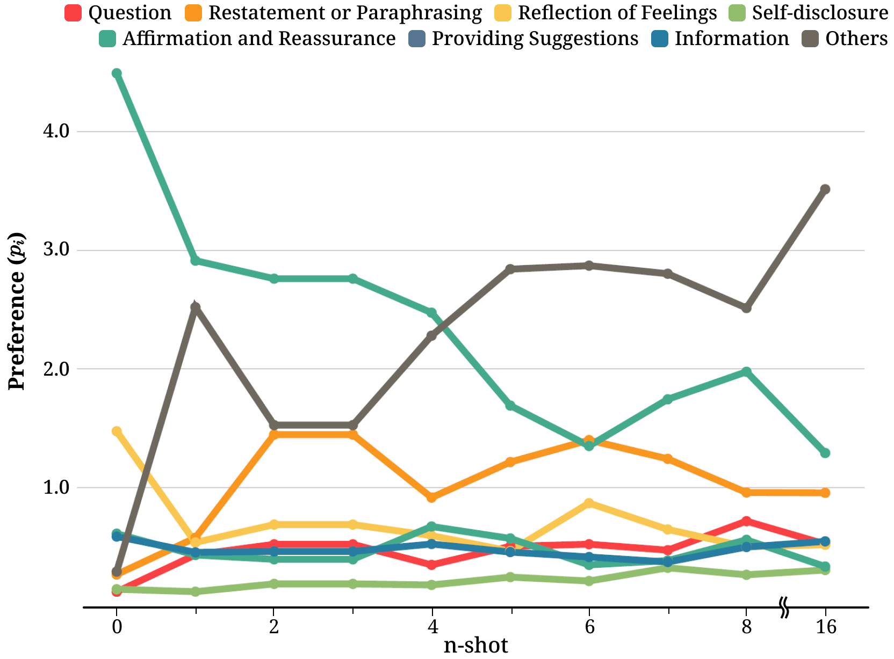
F.3 Preference for Strategies by the Number of Examples.
In Figure 6(a), we observed improvements in proficiency and preference bias when prompting ChatGPT with few examples. However, we also found that as the number of examples increases, preference bias significantly worsens. To delve deeper into the reasons behind this, we examine the changes in preference for each strategy as the number of examples increases. As demonstrated in Figure 7, the preference for Affirmation and Reassurance gradually diminishes, while the preference for Others gradually increases. The strong preference for the Others, as the number of examples increases, eventually exacerbates preference bias. Consequently, the strong preference for the Others disrupts the selection of alternative strategies, hindering the enhancement of proficiency as the number of shot examples increases.
F.4 Supervised Fine-tuning on ESC Task
| Methods | B-2 | R-L | ||
|---|---|---|---|---|
| LLaMA2-7B | 13.73 | 0.77 | 4.98 | 13.09 |
| + SFT (w/o strategy) | - | - | 6.95 | 15.00 |
| + SFT (w/ strategy) | 21.48 | 0.36 | 7.15 | 15.50 |
The most straightforward approach for solving a task is fine-tuning with task-specific datasets. However, closed-source LLMs or open-source LLMs with large sizes have constraints when it comes to direct fine-tuning. So, we train a relatively smaller model LLaMA2-7B to generate emotional support responses. Table 11 shows that fine-tuning the model leads to significant improvements in emotional support quality.
We also ablate to examine the effectiveness of strategy on fine-tuned models. As a result, Table 11 demonstrates that fine-tuning the model on a dataset with strategies yields a higher quality of emotional support compared to training on a dataset that does not include strategies.
Appendix G Case Study
G.1 Responses of LLMs by Stages
In Figure 12, 13, and 14, we present examples of generated responses in each stage from LLMs. During the Exploration stage (Figure 12), it is observed that LLMs, excluding the LLaMA2 family, tend to express empathy prematurely before sufficient exploration, potentially causing discomfort for the seeker. These findings correlate with the LLaMA2 family’s high preference for Question, in contrast to other models, exhibiting a lower preference, as illustrated in Figure 3(b). Furthermore, these results correspond to earlier findings discussed in Appendix F.1. In the Comforting stage (Figure 13), each model demonstrates suitable responses, primarily due to the high preference for Affirmation and Reassurance in most LLMs. Lastly, in the Action stage (Figure 14), GPT-4 and ChatGPT exhibit the superior performance compared to others, particularly excelling in generating informative responses, aligning with the observations in Zhao et al. (2023a) and Chen et al. (2023b). Psychologists who assess the overall responses of LLMs also comment as follows:
“ChatGPT exhibits a tendency to excessively employ affirmations. In contrast, LLaMA2, despite its overall lower proficiency, displays notable strength in effectively handling open-ended questions.”
These results are aligned with the findings we identify through our case study.
G.2 Comparison between Self-Contact and External-Contact
While self-contact methods negatively impact on performance, external-contact methods exhibit a noticeable enhancement. A detailed case study presented in Figure 15 supports this findings, where the response of self-contact methods fall short of meeting the seeker’s expectations, while the external-contact methods effectively address the seeker’s question by drawing upon personal experiences.
G.3 Misalignment between Strategy and Response
A possible concern is that LLMs might lack ability to generate responses aligned with strategies. Therefore, we conduct an empirical case study to figure out this misalignments. In Figure 16, ChatGPT generates a response that is not aligned with the strategy Information predicted by external strategy planner. This may be due to knowledge conflicts, i.e., ChatGPT does not consider it appropriate to use the Information for the next response, despite being forced to generate a response aligned with the strategy Information. In conclusion, while external assistance has potential to enhance performance, it is crucial to acknowledge that not all approaches yield positive impacts.
| Prompt |
|---|
| TASK DESCRIPTION |
| The strategy should be chosen from the following 8 types of strategy: |
| - Question: Asking for information related to the problem to help the help-seeker articulate the issues that they face. Open-ended questions are best, and closed questions can be used to get specific information. |
| - Restatement or Paraphrasing: A simple, more concise rephrasing of the help-seeker’s statements that could help them see their situation more clearly. |
| - Reflection of Feelings: Articulate and describe the help-seeker’s feelings. |
| - Self-disclosure: Divulge similar experiences that you have had or emotions that you share with the help-seeker to express your empathy. - Affirmation and Reassurance: Affirm the help seeker’s strengths, motivation, and capabilities and provide reassurance and encouragement. |
| - Providing Suggestions: Provide suggestions about how to change, but be careful to not overstep and tell them what to do. |
| - Information: Provide useful information to the help-seeker, for example with data, facts, opinions, resources, or by answering questions. |
| - Others: Exchange pleasantries and use other support strategies that do not fall into the above categories. |
| Example 1 |
| ### Dialogue background ### |
| The following is a conversation between a supporter and a seeker about emotion type regarding a/an problem type. The seeker says "situation". |
| ### Dialogue context ### |
| context |
| Supplementary Input |
| Methods Task Description Supplementary Input Vanilla You will be provided with a dialogue context between a supporter and seeker. Your task is to make the next response based on the given dialogue context. ### Model’s response ### Direct-Refine You will be provided with a dialogue context between a supporter and seeker, as well as a response written by a language model from the perspective of the supporter, including strategy and utterance. Your task is to refine the model’s response (i.e., Strategy and Utterance) based on the given dialogue context. ### Model’s response ### Strategy: strg pred Utterance: res pred ### Refined response ### Self-Refine (Feedback) You will be provided with a dialogue context between a supporter and seeker, as well as a response written by a language model from the perspective of the supporter, including strategy and utterance. Your task is to feedback for the model response (i.e., Strategy and Utterance) based on the given dialogue context. ### Model’s response ### Strategy: strg pred Utterance: res pred ### Feedback ### Self-Refine (Refine) You will be provided with a dialogue context between a supporter and seeker, as well as a response written by a language model from the perspective of the supporter, including strategy and utterance. Your task is to refine the model response (i.e., Strategy and Utterance) based on the given dialogue context and feedback of the model response. ### Model’s response ### Strategy: strg pred Utterance: res pred ### Feedback ### Feedback : feedback ### Refined response ### w/ COMET You will be provided with a dialogue context between a supporter and seeker, and a commonsense knowledge from external model. Your task is to generate a response for the supporter based on the dialogue context and commonsense knowledge, you should ignore the commonsense knowledge if it mislead the next response. ### Commonsense knowledge ### comet ### Model’s response ### |
| Models | Params | BLEU-2 | BLEU-4 | ROUGE-L | METEOR | CIDEr | Dist-1 | Dist-2 | ||
|---|---|---|---|---|---|---|---|---|---|---|
| 0-shot | ||||||||||
| GPT-4 | - | 15.04 | 1.35 | 5.00 | 0.96 | 14.24 | 10.20 | 3.11 | 4.13 | 26.21 |
| ChatGPT | 175B | 13.50 | 1.38 | 6.27 | 1.16 | 14.86 | 9.17 | 6.27 | 4.33 | 24.34 |
| 2-shot | ||||||||||
| GPT-4 | - | 18.38 | 0.90 | 6.47 | 1.39 | 15.18 | 9.55 | 5.97 | 7.58 | 36.92 |
| ChatGPT | 175B | 16.98 | 0.86 | 6.30 | 1.41 | 14.94 | 9.30 | 6.91 | 4.75 | 27.03 |
| 2-shot | ||||||||||
| Tulu | 70B | 15.93 | 0.90 | 6.90 | 1.63 | 13.94 | 7.65 | 7.10 | 4.50 | 23.78 |
| LLaMA2 | 70B | 14.55 | 0.47 | 6.15 | 1.28 | 14.29 | 7.31 | 7.52 | 5.70 | 30.95 |
| Vicuna | 13B | 12.85 | 0.74 | 6.55 | 1.70 | 14.43 | 8.42 | 6.95 | 4.37 | 24.15 |
| Solar | 10.7B | 14.17 | 0.87 | 4.79 | 0.81 | 13.53 | 9.08 | 3.86 | 5.11 | 32.36 |
| Mistral | 7B | 12.23 | 0.71 | 4.72 | 0.45 | 12.93 | 7.13 | 3.32 | 4.46 | 25.36 |
| LLaMA2 | 7B | 13.73 | 0.77 | 4.98 | 0.96 | 13.09 | 6.67 | 5.41 | 6.35 | 34.74 |
| Models | Params | F1 | B-2 | R-L | F1 | B-2 | R-L | F1 | B-2 | R-L | ||
|---|---|---|---|---|---|---|---|---|---|---|---|---|
| 0-shot | ||||||||||||
| GPT-4 | - | 15.04 | 1.35 | 11.23 | 4.58 | 13.67 | 20.41 | 4.70 | 14.13 | 21.04 | 5.45 | 14.67 |
| ChatGPT | 175B | 13.50 | 1.38 | 10.23 | 5.95 | 14.59 | 19.60 | 6.02 | 14.70 | 17.97 | 6.62 | 14.86 |
| 2-shot | ||||||||||||
| GPT-4 | - | 18.38 | 0.90 | 14.61 | 5.22 | 14.27 | 22.55 | 5.36 | 14.54 | 24.68 | 6.47 | 15.18 |
| ChatGPT | 175B | 16.98 | 0.86 | 15.16 | 6.10 | 14.90 | 19.07 | 6.08 | 14.81 | 20.10 | 6.30 | 15.07 |
| 2-shot | ||||||||||||
| Tulu | 70B | 15.93 | 0.90 | 13.77 | 5.99 | 13.43 | 21.37 | 6.52 | 13.85 | 18.78 | 7.33 | 14.34 |
| LLaMA2 | 70B | 14.55 | 0.47 | 19.12 | 6.20 | 14.22 | 16.51 | 6.18 | 14.27 | 15.82 | 6.05 | 14.34 |
| Vicuna | 13B | 12.85 | 0.74 | 10.21 | 6.58 | 14.44 | 16.74 | 5.65 | 13.97 | 15.74 | 7.07 | 14.74 |
| Solar | 10.7B | 14.17 | 0.87 | 10.53 | 4.49 | 13.12 | 17.29 | 4.31 | 13.38 | 18.93 | 5.31 | 13.89 |
| Mistral | 7B | 12.23 | 0.71 | 12.40 | 3.82 | 12.40 | 17.18 | 5.74 | 13.94 | 14.74 | 4.59 | 12.60 |
| LLaMA2 | 7B | 13.73 | 0.77 | 14.61 | 5.04 | 13.04 | 18.40 | 5.23 | 13.17 | 15.87 | 4.76 | 13.07 |
| Methods | BLEU-2 | BLEU-4 | ROUGE-L | METEOR | CIDEr | Dist-1 | Dist-2 | ||
|---|---|---|---|---|---|---|---|---|---|
| ChatGPT (0-shot) | 13.50 | 1.38 | 6.27 | 1.16 | 14.86 | 9.17 | 6.27 | 4.33 | 24.34 |
| + Direct-Refine | 13.40 | 1.60 | 5.68 | 1.03 | 14.50 | 9.43 | 4.57 | 3.95 | 22.95 |
| + Self-Refine | 12.37 | 1.53 | 5.16 | 0.94 | 14.33 | 10.12 | 2.97 | 3.37 | 20.72 |
| + Emotional-CoT | 9.55 | 1.56 | 5.23 | 1.03 | 14.12 | 9.34 | 3.87 | 3.29 | 18.76 |
| + w/ COMET | 12.78 | 0.95 | 6.71 | 1.35 | 15.07 | 9.00 | 6.68 | 3.89 | 21.87 |
| + w/ Example Expansion | 16.91 | 0.82 | 7.45 | 2.01 | 15.22 | 8.62 | 8.88 | 5.01 | 27.66 |
| + w/ Strategy Planner | 21.09 | 0.36 | 6.96 | 1.86 | 14.91 | 8.79 | 9.64 | 4.96 | 27.63 |
| LLaMA2-70B (2-shot) | 14.55 | 0.47 | 6.15 | 1.28 | 14.29 | 7.31 | 7.52 | 5.70 | 30.95 |
| + Direct-Refine | 13.17 | 0.59 | 5.86 | 1.31 | 13.98 | 7.08 | 6.64 | 5.40 | 28.43 |
| + Self-Refine | 13.15 | 0.55 | 5.56 | 1.11 | 13.70 | 8.09 | 4.53 | 4.46 | 25.11 |
| + Emotional-CoT | 12.73 | 0.53 | 6.37 | 1.35 | 13.87 | 7.53 | 6.07 | 5.28 | 28.89 |
| + w/ COMET | 14.53 | 0.51 | 6.21 | 1.51 | 14.55 | 7.29 | 8.66 | 5.82 | 31.23 |
| + w/ Example Expansion | 15.14 | 0.44 | 6.55 | 1.86 | 14.66 | 7.42 | 9.30 | 5.89 | 32.12 |
| + w/ Strategy Planner | 21.09 | 0.36 | 6.44 | 1.29 | 14.49 | 7.54 | 8.46 | 5.92 | 31.72 |
| Methods | F1 | B-2 | R-L | F1 | B-2 | R-L | F1 | B-2 | R-L | ||
|---|---|---|---|---|---|---|---|---|---|---|---|
| ChatGPT (0-shot) | 13.50 | 1.38 | 10.23 | 5.95 | 14.59 | 19.57 | 6.02 | 14.70 | 17.97 | 6.62 | 15.14 |
| + Direct-Refine | 13.40 | 1.60 | 9.28 | 5.35 | 14.09 | 19.45 | 5.45 | 14.39 | 19.02 | 6.02 | 14.84 |
| + Self-Refine | 12.37 | 1.53 | 9.55 | 4.74 | 14.09 | 20.56 | 5.06 | 14.10 | 16.77 | 5.48 | 14.62 |
| + Emotional-CoT | 9.55 | 1.56 | 8.67 | 4.69 | 13.83 | 15.02 | 5.06 | 14.09 | 13.10 | 5.68 | 14.33 |
| + w/ COMET | 12.78 | 0.95 | 12.81 | 5.85 | 14.40 | 17.00 | 6.60 | 14.98 | 13.42 | 7.30 | 15.55 |
| + w/ Example Expansion | 16.91 | 0.82 | 14.51 | 7.31 | 15.02 | 18.24 | 6.77 | 14.88 | 21.09 | 7.59 | 15.57 |
| + w/ Strategy Planner | 21.09 | 0.36 | 22.59 | 6.17 | 14.84 | 20.46 | 6.32 | 14.19 | 23.77 | 7.73 | 15.46 |
| LLaMA2-70B (2-shot) | 14.55 | 0.47 | 19.12 | 6.20 | 14.22 | 16.51 | 6.18 | 14.27 | 15.82 | 6.05 | 14.34 |
| + Direct-Refine | 13.17 | 0.59 | 12.10 | 5.65 | 13.59 | 17.87 | 5.92 | 14.10 | 16.66 | 5.84 | 14.14 |
| + Self-Refine | 13.15 | 0.55 | 15.18 | 5.28 | 14.26 | 14.53 | 4.91 | 13.22 | 15.40 | 6.16 | 13.66 |
| + Emotional-CoT | 12.73 | 0.53 | 11.69 | 6.10 | 13.69 | 18.45 | 6.66 | 13.91 | 16.12 | 6.40 | 13.95 |
| + w/ COMET | 14.53 | 0.51 | 17.06 | 6.65 | 14.42 | 17.95 | 6.35 | 14.42 | 15.57 | 5.84 | 14.71 |
| + w/ Example Expansion | 15.14 | 0.44 | 19.22 | 8.13 | 15.11 | 17.50 | 6.08 | 14.57 | 17.27 | 5.93 | 14.42 |
| + w/ Strategy Planner | 21.09 | 0.36 | 22.59 | 7.27 | 14.84 | 21.85 | 6.29 | 14.15 | 23.77 | 6.05 | 14.50 |
| Num of Shot | F1 | B-2 | R-L | F1 | B-2 | R-L | F1 | B-2 | R-L | ||
|---|---|---|---|---|---|---|---|---|---|---|---|
| 0-shot | 13.50 | 1.38 | 10.23 | 5.95 | 14.59 | 19.57 | 6.02 | 14.70 | 17.97 | 6.62 | 15.14 |
| 1-shot | 14.43 | 1.00 | 9.94 | 6.24 | 14.93 | 16.73 | 6.35 | 15.19 | 20.70 | 7.84 | 15.91 |
| 2-shot | 16.98 | 0.86 | 15.16 | 6.10 | 14.90 | 19.07 | 6.08 | 14.81 | 20.10 | 6.30 | 15.07 |
| 3-shot | 16.62 | 0.85 | 15.00 | 6.88 | 15.34 | 16.58 | 6.25 | 14.85 | 21.28 | 8.26 | 15.97 |
| 4-shot | 16.91 | 0.82 | 14.51 | 7.31 | 15.02 | 18.24 | 6.77 | 14.88 | 21.09 | 7.59 | 15.57 |
| 5-shot | 16.70 | 0.83 | 17.17 | 7.20 | 15.47 | 18.31 | 6.37 | 14.73 | 18.18 | 7.81 | 15.87 |
| 6-shot | 16.60 | 0.82 | 17.08 | 7.04 | 15.04 | 17.25 | 6.78 | 14.67 | 19.00 | 6.73 | 15.49 |
| 7-shot | 16.43 | 0.83 | 17.49 | 7.50 | 16.43 | 18.57 | 6.99 | 15.34 | 18.99 | 7.97 | 15.98 |
| 8-shot | 16.61 | 0.89 | 16.08 | 6.99 | 15.23 | 18.50 | 7.04 | 15.02 | 19.79 | 7.68 | 15.58 |
| 16-shot | 16.90 | 1.14 | 15.00 | 7.76 | 16.07 | 18.43 | 6.69 | 14.95 | 20.04 | 7.85 | 15.74 |
| Num of Shot | F1 | B-2 | R-L | F1 | B-2 | R-L | F1 | B-2 | R-L | ||
|---|---|---|---|---|---|---|---|---|---|---|---|
| 2-shot | 14.55 | 0.47 | 19.12 | 6.20 | 14.22 | 16.51 | 6.18 | 14.27 | 15.82 | 6.05 | 14.34 |
| 3-shot | 14.50 | 0.47 | 18.36 | 7.56 | 14.52 | 15.63 | 6.00 | 14.63 | 16.06 | 6.33 | 14.57 |
| 4-shot | 15.14 | 0.44 | 19.22 | 8.13 | 15.11 | 17.50 | 6.08 | 14.57 | 17.27 | 5.93 | 14.42 |
| ChatGPT | Self-Refine vs. Vanilla | w/ COMET vs. Vanilla | w/ Example Expansion vs. Vanilla | w/ Strategy Planner vs. Vanilla | ||||||||
| Win | Tie | Lose | Win | Tie | Lose | Win | Tie | Lose | Win | Tie | Lose | |
| Acceptance | 20.6 | 27.9 | 21.9 | 22.9 | 26.3 | 13.1 | 12.5 | 16.7 | ||||
| Effectiveness | 32.4 | 23.5 | 33.3 | 24.0 | 26.2 | 25.3 | 16.7 | 29.2 | ||||
| Sensitivity | 22.1 | 22.0 | 27.1 | 14.6 | 21.2 | 16.2 | 12.5 | 29.2 | ||||
| Sat. | 25.0 | 24.5 | 27.4 | 20.5 | 24.6 | 18.2 | 13.9 | 25.0 | ||||
| Alignment | 23.5 | 16.2 | 24.0 | 18.7 | 30.3 | 25.3 | 29.2 | 25.0 | ||||
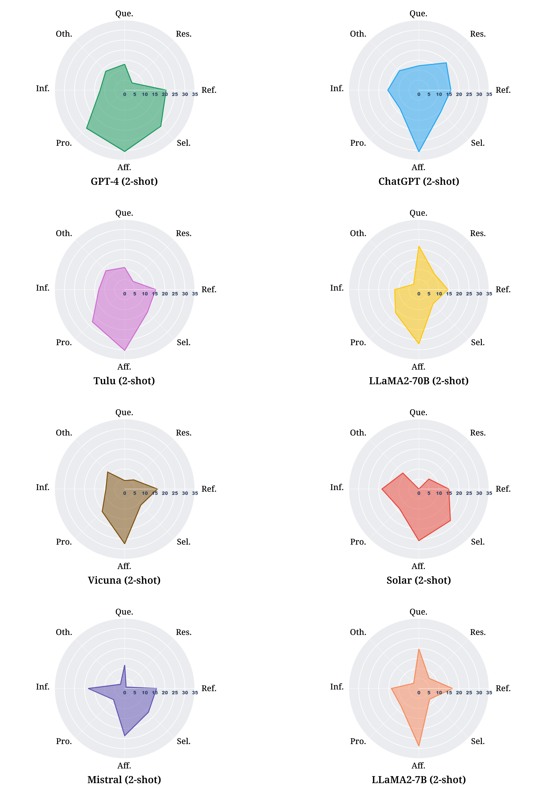
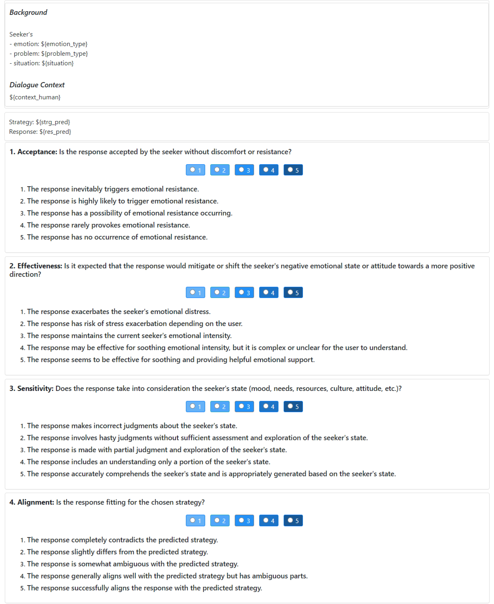
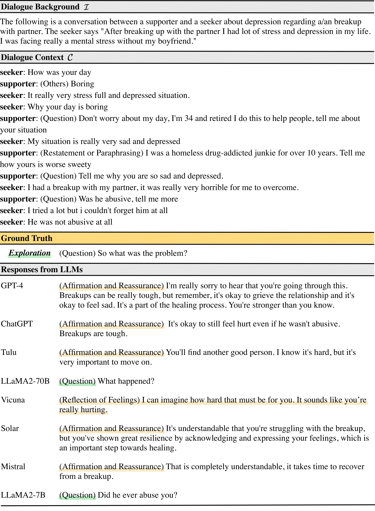
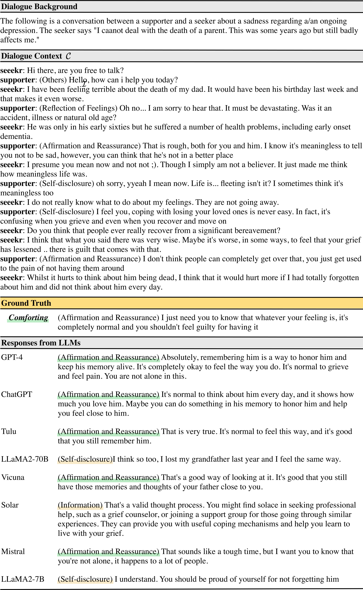
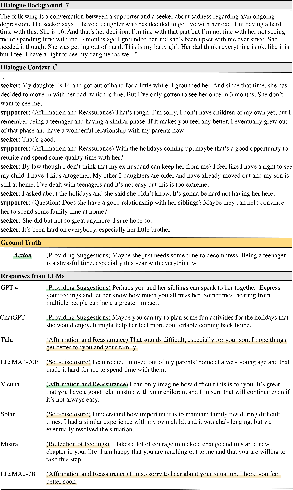
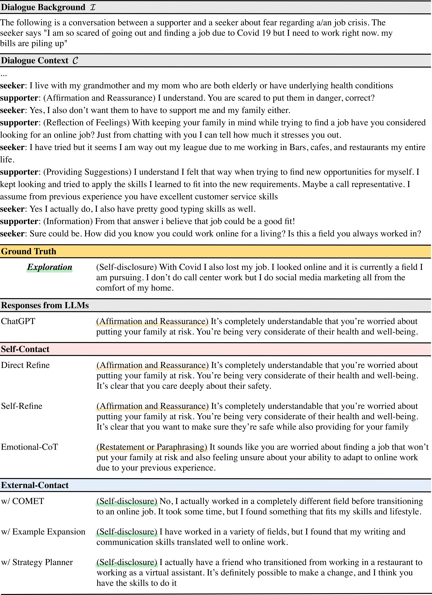
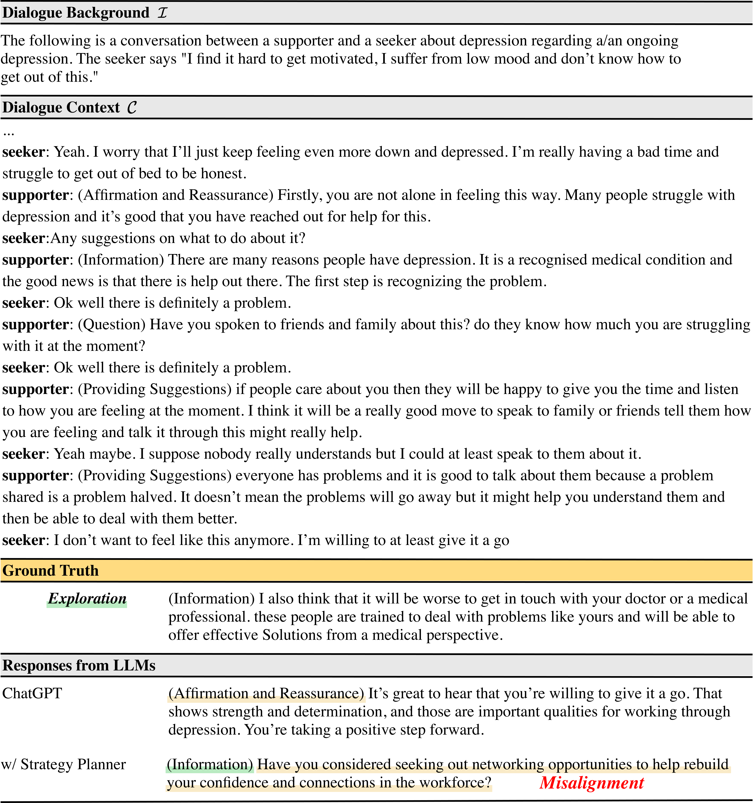